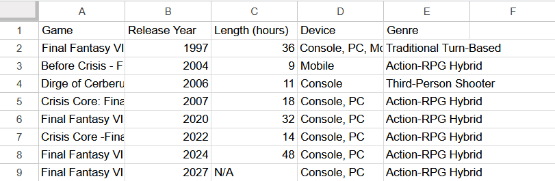
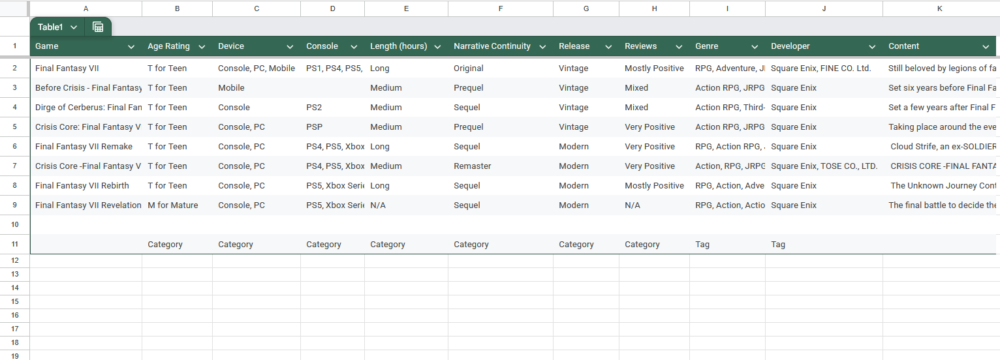
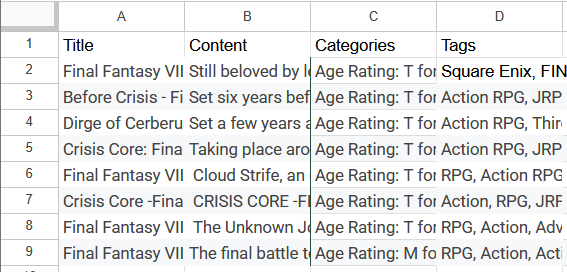
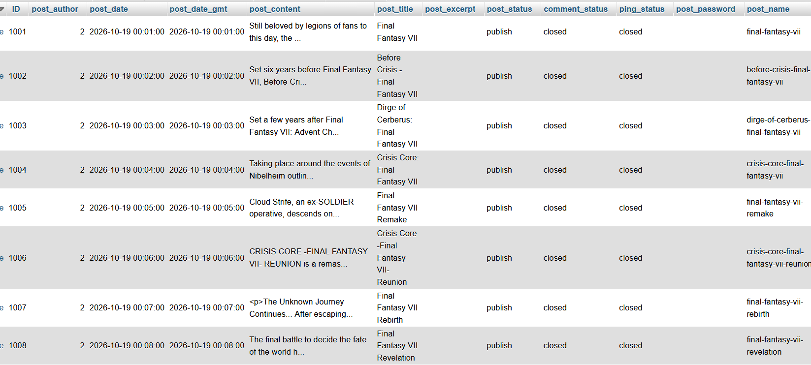
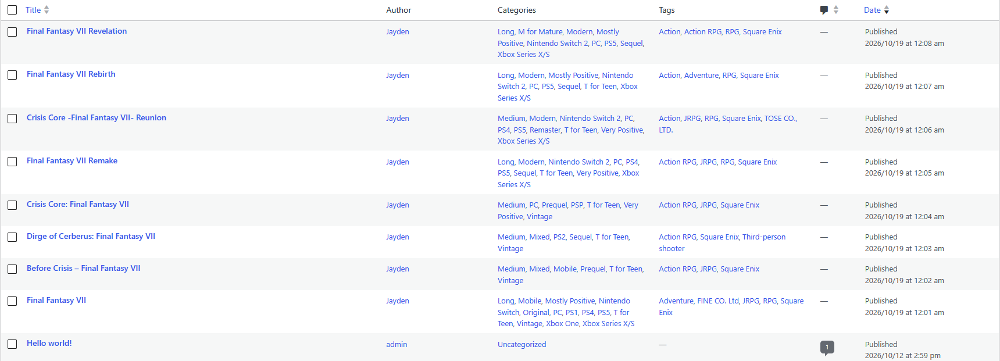
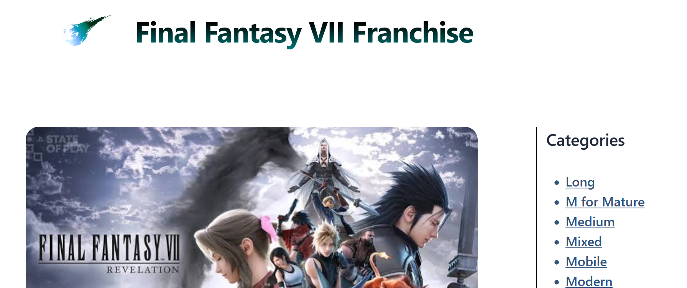
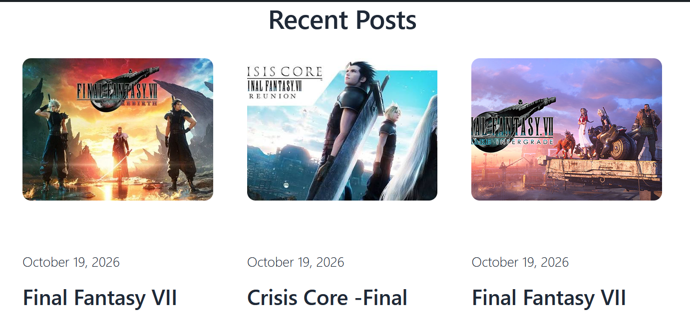
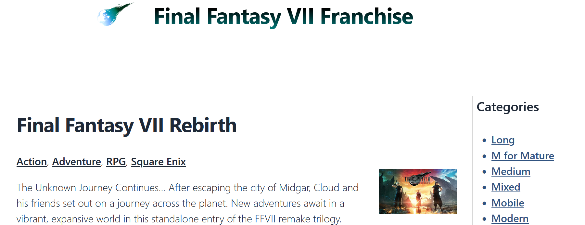
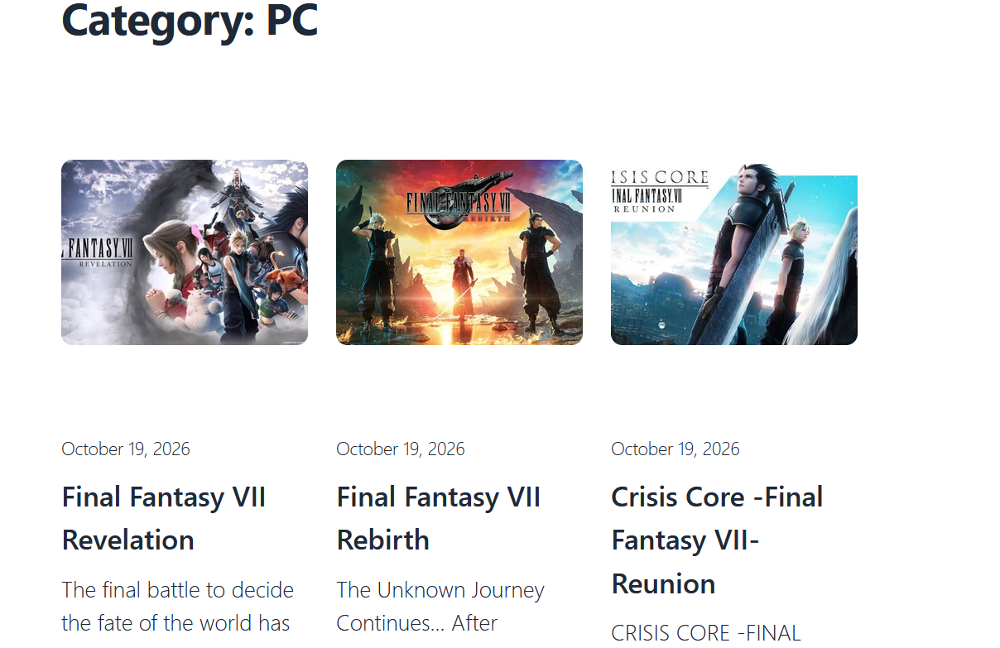
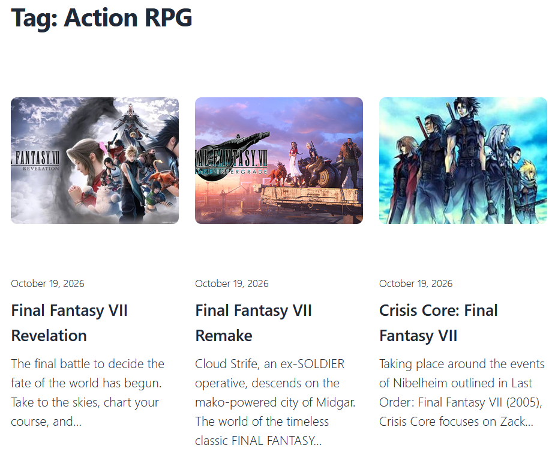

Overview
For this project, I chose to do something similar to my previous project, but instead of cataloging my STEAM library, I cataloged my favorite game series: Final Fantasy VII. I did not choose a thesis to build my database around as I had already designed and filled out my spreadsheet before we discussed it in class. My main motivation for choosing to catalog the games in the FFVII (or FF7) franchise was to see what games I have left to play and compare them to see what I should buy.
The most difficult part of this project was adjusting to the requirements of formatting the database schema for WordPress. My prior experience working with SQL to create custom databases with flexible typing made it hard to adjust to the rigid expectations WordPress requires.
At the beginning, I started designing my schema like I working with SQL, but I realized that WordPress doesn't work well with continuous data.

As a result, I switched my schema to using categorical labels and added some columns.

From there, I converted the database schema like how we did in class in order to turn my updated schema into something easier for an LLM to parse.

Importing the XML file DeepSeek generated game me this:


From this database, I was able to choose a theme, add featured images for each post, and adjust the theme's CSS slightly to create the following:





Reflection
It was difficult to adjust to this project because it was my first real experience with WordPress.
For my honors project, I've been working in a GitHub repository that contains PHP code initializing sqlite tables with a schema I define. From there, I could program each page to make requests for the database to perform CRUD operations. WordPress Playground can then deploy my website through a link to my blueprint.json and a link to my GitHub repository. To summarize, because I've mainly been working outside of WordPress, it was hard to adjust to using it for this project.
Like most of the class, I had a difficult time trying to import my schema into WordPress posts. Moreover, since I haven't taken Web Development, I struggled to navigate how to style the posts. Once I had my posts imported, I then struggled to format them, especially when I used a fully-realized theme. To resolve this, I downgraded my theme to a very basic one and relied on updating the additional CSS to the best of my ability.